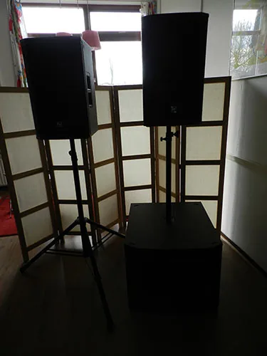
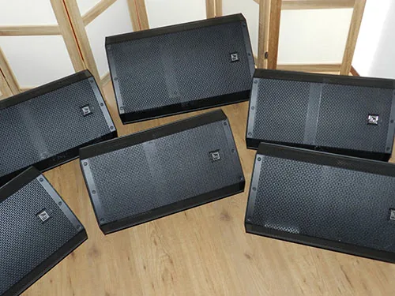
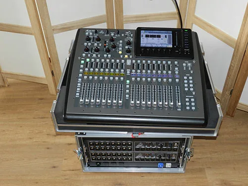

Materiaal
Professionele apparatuur van A-merken, goed onderhouden en klaar voor jouw optreden. We blijven voortdurend investeren in ons materiaal.
Electro-Voice ETX
Actief P.A.-systeem met krachtige subwoofers en heldere tops. Geschikt voor cafés, zalen, feesten en buitenpodia.

- Electro-VoiceETX-18SPActieve 18-inch subwoofer voor een strak en diep laag.
- Electro-VoiceETX-12PActieve 12-inch fullrange top met ingebouwde DSP.
Electro-Voice ZLX
Actieve floormonitors, zodat iedere muzikant zichzelf en de rest van de band goed hoort op het podium.

- Electro-VoiceZLX-15PActieve 15-inch monitor met veel headroom.
- Electro-VoiceZLX-12PCompacte actieve 12-inch monitor.
Behringer X32
Digitaal mengpaneel met digitale stagebox. Eén CAT5-kabel tussen podium en mixer, en alle instellingen zijn op te slaan en terug te halen.

- BehringerX32 CompactDigitale 40-kanaals mixer met motorfaders en effecten.
- BehringerS16Digitale stagebox met 16 microfooningangen en 8 uitgangen.
- VerbindingCAT5Eén netwerkkabel van stagebox naar mixer. Minder kabels, meer overzicht.
Shure, Sennheiser, AKG, Rode, Radial & BSS
Een complete microfoonset voor drums, versterkers, blazers, akoestische instrumenten en zang, plus professionele DI's voor bas, keyboards en akoestische gitaar.
Instrumentmicrofoons
- AKGD112Instrumentmicrofoon voor bassdrum en basversterker.
- RodeNT5Condensator-instrumentmicrofoon voor overheads en akoestisch.
- SennheiserMD 421Klassieke instrumentmicrofoon voor toms, gitaar en blazers.
- Sennheisere 904Compacte instrumentmicrofoon voor toms en snare.
- Sennheisere 906Instrumentmicrofoon voor gitaarversterkers.
- ShureBeta 91AGrensvlakmicrofoon voor in de bassdrum.
- ShureBeta 52ABassdrum- en basmicrofoon met veel punch.
- ShureSM57De allrounder voor snare en gitaarversterkers.
Zangmicrofoons
- Sennheisere 945Supercardioïde zangmicrofoon met veel definitie.
- ShureSM58De wereldstandaard voor live zang.
- ShureBeta 58AHeldere supercardioïde zangmicrofoon.
- ShureKSM8High-end zangmicrofoon met dubbel membraan.
DI's
- RadialJ48Actieve DI voor bas, keyboards en akoestische gitaar.
- BSSAR-133Actieve DI, een studio- en podiumklassieker.
Standaards & kabels
Ook de details doen ertoe. Daarom werken we alleen met degelijke standaards en betrouwbare bekabeling.
- K&MStandaardsAlle microfoon- en speakerstandaards zijn van König & Meyer.
- Cordial / ProcabXLR-kabelsAlle XLR-kabels zijn van Cordial of Procab.

Laten we jouw evenement laten klinken zoals het hoort.
We gaan graag met je in gesprek over de mogelijkheden om jouw optreden, feest of evenement geluidstechnisch tot een groot succes te maken. Vrijblijvend en zonder verrassingen achteraf.